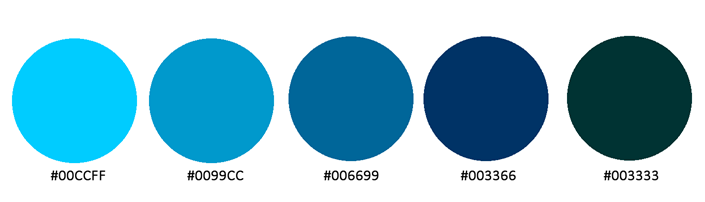
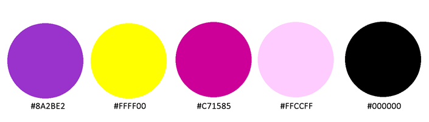
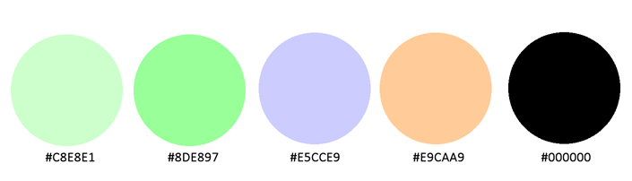
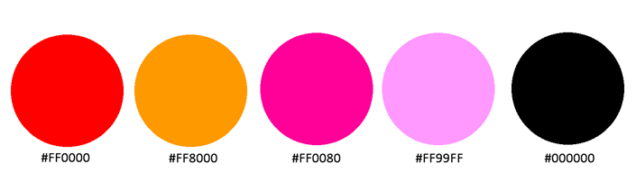
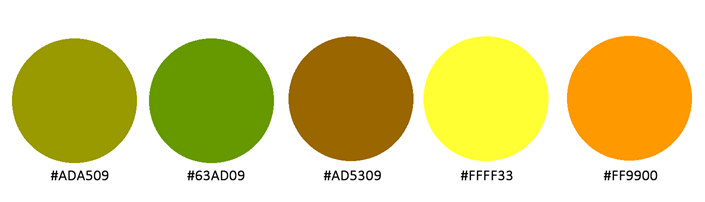

Color Themes
Color themes are an important tool for any web designer. Early in the process, I will consult the client in an effort to nail down a color theme in order to create a cohesive feel for the entire website. This Theme will be an evocative tool in my toolbox, and is crucial. Below, I have chosen a few possible color themes and explained what they might be used for. I hope you enjoy! Should you have any questions or comments, please feel free to reach out to me at suelutz@gmail.com.
Monochromatic Color Theme

This monochromatic, conservative color scheme might appeal to the upper-class. The blue is not only conservative in its connotation, but also is reminiscent of water and aquatics. I think this is a good choice for a yacht club.
Split Color Theme

This split design appealed to me since it incorporates 2 of my favorite hues. I think as a web designer I would opt for small amounts of bold color choices, and this theme reflects that.
Baby Nursery Designer Color Theme

When I think of pastels, I think of babies. These hues evoke thoughts of cribs and mobiles, and I think they would be a good choice for a website of a baby nursery designer.
Analogous Color Theme

The vibrant tones in this theme make me think of toy stores. The first 3 colors are analogous. This theme combines pinks for girls with reds and oranges for boys, with vibrant, exciting colors for all kids.
Hipster Color Theme

The warm, earthy tones that are reminiscent of home decor of the 1970's, remind me of "hipsters." This theme would appeal to bearded men and chicks with tattoos and body piercings. I think a record store would be a good client for this color theme.